전기기능사 (2013-07-21 기출문제)
1과목: 전기 이론
1. R=4[Ω], XL=15[Ω], Xc=12[Ω]의 RLC 직렬 회로에서 100[V]의 교류 전압을 가할 때 전류와 전압의 위상차는 약 얼마인가?
- 0°
- 37°
- 53°
- 90°
(정답률: 51%)

2. 어느 회로의 전류가 다음과 같을 때, 이 회로에 대한 전류의 실효값은?
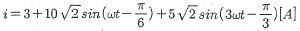
- 11.6[A]
- 23.2[A]
- 32.2[A]
- 48.3[A]
(정답률: 66%)
3. 정전기 발생 방지책으로 틀린 것은?
- 대전 방지제의 사용
- 접지 및 보호구의 착용
- 배관 내 액체의 흐름 속도 제한
- 대기의 습도를 30% 이하로 하여 건조함을 유지
(정답률: 83%)
4. 다음 중 강자성체가 아닌 것은 어느 것인가?
- 철
- 코발드
- 니켈
- 텅스텐
(정답률: 84%)
5. 전선에 일정량 이상의 전류가 흘러서 온도가 높아지면 절연물을 열화하여 절연성을 극도로 악화시킨다. 그러므로 도체에는 안전하게 흘릴 수 있는 최대 전류가 있다. 이 전류를 무엇이라 하는가?
- 줄 전류
- 불평형 전류
- 평형 전류
- 허용 전류
(정답률: 81%)
6. 비오-사바르(Bio-Savart)의 법칙과 가장 관계가 깊은 것은?
- 전류가 만드는 자장의 세기
- 전류와 전압의 관계
- 기전력과 자계의 세기
- 기전력과 자속의 변화
(정답률: 73%)
7. 2전력계법에 의해 평형 3상 전력을 측정하였더니 전력계가 각각 800[W], 400[W]를 지시하였다면, 이 부하의 전력은 몇 [W]인가?
- 600[W]
- 800[W]
- 1200[W]
- 1600[W]
(정답률: 87%)
8. 정전용량 C1, C2를 병렬로 접속하였을 때의 합성정전 용량은?
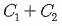
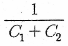
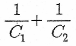
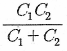
(정답률: 73%)
9. 자속밀도 B[Wb/m2]되는 균등한 자계 내에 길이 ℓ[m]의 도선을 자계에 수직인 방향으로 운동시킬 때 도선에 e[V]의 기전력이 발생한다면 이 도선의 속도[m/s]는?
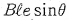
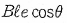
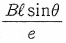
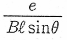
(정답률: 37%)
10. 코일이 접속되어 있을 때, 누설 자속이 없는 이상적인 코일간의 상호 인덕턴스는?
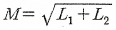
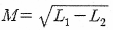
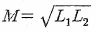
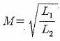
(정답률: 71%)
11. 단위 길이당 권수 100회인 무한장 솔레노이드에서 10[A]의 전류가 흐를 때 솔레노이드 내부의 자장[AT/m]은?
- 10
- 100
- 1000
- 10000
(정답률: 77%)
12. 저항의 병렬 접속에서 합성저항을 구하는 설명으로 옳은 것은?
- 연결된 저항을 모두 합하면 된다.
- 각 저항값의 역수에 대한 합을 구하면 된다.
- 저항값의 역수에 대한 합을 구하고 다시 그 역수를 취하면 된다.
- 각 저항값을 모두 합하고 저항 숫자로 나누면 된다.
(정답률: 73%)
13. R[Ω]인 저항 3개가 △결선으로 되어 있는 것을 Y 결선으로 환산하면 1상의 저항[Ω]은?
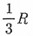
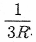
- 3R
- R
(정답률: 67%)
14. N형 반도체의 주반송자는 어느 것인가?
- 억셉터
- 전자
- 도우너
- 정공
(정답률: 61%)
15. (가), (나)에 들어갈 내용으로 알맞은 것은?
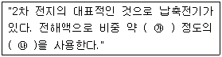
- ㉮ 1.15 ~ 1.21, ㉯ 묽은 황산
- ㉮ 1.25 ~ 1.36, ㉯ 질산
- ㉮ 1.01 ~ 1.15, ㉯ 질산
- ㉮ 1.23 ~ 1.26, ㉯ 묽은 황산
(정답률: 63%)
16. 20[Ω], 30[Ω], 60[Ω]의 저항 3개를 병렬로 접속하고 여기에 60[V]의 전압을 가했을 때, 이 회로에 흐르는 전체 전류는 몇 [A] 인가?
- 3[A]
- 6[A]
- 30[A]
- 60[A]
(정답률: 68%)
17. 자석의 성질로 옳은 것은?
- 자석은 고온이 되면 자력이 증가한다.
- 자기력선에는 고무줄과 같은 장력이 존재한다.
- 자력선은 자석 내부에서도 N극에서 S극으로 이동한다.
- 자력선은 자성체는 투과하고, 비자성체는 투과하지 못한다.
(정답률: 51%)
18. 100[V]의 전압계가 있다. 이 전압계를 써서 200[V]의 전압을 측정하려면 최소 몇 [Ω]의 저항을 외부에 접속해야 하는가?(단, 전압계의 내부저항은 5000[Ω]이다.)
- 10000
- 5000
- 2500
- 1000
(정답률: 53%)
19. 2분간에 876000[J]의 일을 하였다. 그 전력은 얼마인가?
- 7.3[kW]
- 29.2[kW]
- 73[kW]
- 438[kW]
(정답률: 70%)
20. 최대값이 110[V]인 사인파 교류 전압이 있다. 평균값은 약 몇 [V]인가?
- 30[V]
- 70[V]
- 100[V]
- 110[V]
(정답률: 67%)
2과목: 전기 기기
21. 수전단 발전소용 변압기 결선에 주로 사용하고 있으며 한쪽은 중성점을 접지할 수 있고 다른 한쪽은 제3고조파에 의한 영향을 없애주는 장점을 가지고 있는 3상 결선 방식은?
- Y-Y
- △-△
- Y-△
- V
(정답률: 71%)
22. 단상 유도전동기에서 보조권선을 사용하는 주된 이유는?
- 역률개선을 한다.
- 회전자장을 얻는다.
- 속도제어를 한다.
- 기동 전류를 줄인다.
(정답률: 32%)
23. 다음 중 전력 제어용 반도체 소자가 아닌 것은?
- LED
- TRIAC
- GTO
- IGBT
(정답률: 79%)
24. 그림과 같은 전동기 제어회로에서 전동기 M의 전류 방향으로 올바른 것은?(단, 전동기의 역률은 100%이고, 사이리스터의 점호각은 0° 라고 본다.)
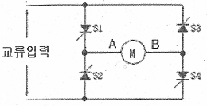
- 항상 "A"에서 "B"의 방향
- 항상 "B"에서 "A"의 방향
- 입력의 반주기 마다 "A"에서 "B"의 방향, "B"에서 "A"의 방향
- S1과 S4, S2와 S3의 동작 상태에 따라 "A"에서 "B"의 방향, "B"에서 "A"의 방향
(정답률: 61%)
25. 변압기유와 구비해야 할 조건으로 틀린 것은?
- 점도가 낮을 것
- 인화점이 높을 것
- 응고점이 높을 것
- 절연내력이 클 것
(정답률: 75%)
26. 동기 발전기의 병렬운전 시 원동기에 필요한 조건으로 구성된 것은?
- 균일한 각속도와 기전력의 파형이 같을 것
- 균일한 각속도와 적당한 속도 조정률을 가질 것
- 균일한 주파수와 적당한 속도 조정률을 가질 것
- 균일한 주파수와 적당한 파형이 같을 것
(정답률: 36%)
27. 단락비가 1.2인 동기발전기의 % 동기 임피던스는 약 몇[%] 인가?
- 68
- 83
- 100
- 120
(정답률: 58%)
28. 아크 용접용 변압기가 일반 전력용 변압기와 다른 점은?
- 권선의 저항이 크다.
- 누설 리액턴스가 크다.
- 효율이 높다.
- 역률이 좋다.
(정답률: 51%)
29. 보호를 요하는 회로의 전류가 어떤 일정한 값(정정값) 이상으로 흘렀을 때 동작하는 계전기는?
- 과전류 계전기
- 과전압 계전기
- 차동 계전기
- 비율 차동 계전기
(정답률: 65%)
30. 직류 분권 발전기의 병렬운전의 조건에 해당되지 않는 것은?
- 극성이 같을 것
- 단자전압이 같을 것
- 외부특성곡성이 수하특성일 것
- 균압모선을 접속할 것
(정답률: 48%)
31. 접지공사의 종류에서 제3종 접지공사의 접지 저항값은 몇[Ω] 이하로 유지하여야 하는가?(오류 신고가 접수된 문제입니다. 반드시 정답과 해설을 확인하시기 바랍니다.)
- 10
- 50
- 100
- 150
(정답률: 47%)
32. 상전압 300[V]의 3상 반파 정류 회로의 직류 전압은 약 몇 [V]인가?
- 520[V]
- 350[V]
- 260[V]
- 50[V]
(정답률: 56%)
33. 용량이 작은 전동기로 직류와 교류를 겸용할 수 있는 전동기는?
- 셰이딩전동기
- 단상반발전동기
- 단상 직권 정류자전동기
- 리니어전동기
(정답률: 36%)
34. 15[kW], 60[Hz], 4극의 3상 유도 전동기가 있다. 전부하가 걸렸을 때의 슬립이 4[%]라면 이때의 2차(회전자)측 동손은 약 [kW]인가?
- 1.2
- 1.0
- 0.8
- 0.6
(정답률: 29%)
35. P형 반도체의 전기 전도의 주된 역할을 하는 반송자는?
- 전자
- 정공
- 가전다
- 5가 불순물
(정답률: 64%)
36. 직류 전동기에서 무부하가 되면 속도가 대단히 높아져서 위험하기 때문에 무부하운전이나 벨트를 연결한 운전을 해서는 안 되는 전동기는?
- 직권전동기
- 복권전동기
- 타여자전동기
- 분권전동기
(정답률: 64%)
37. 권선형 유도전동기 기동시 회전자 측에 저항을 넣는 이유는?
- 기동 전류 증가
- 기동 토크 감소
- 회전수 감소
- 기동 전류 억제와 토크 증대
(정답률: 52%)
38. 동기 전동기의 부하각(load angle)은?
- 공급전압 V와 역기전압 E와의 위상각
- 역기전압 E와 부하전류 I와의 위상각
- 공급전압 V와 부하전류 I와의 위상각
- 3상 전압의 상전압과 선간 전압과의 위상각
(정답률: 39%)
39. 전기기의 냉각 매체로 활용하지 않는 것은?
- 물
- 수소
- 공기
- 탄소
(정답률: 65%)
40. 동기 전동기의 계자 전류를 가로축에, 전기자 전류를 세로축으로 하여 나타낸 V곡선에 관한 설명으로 옳지 않는 것은?
- 위상 특성 곡선이라 한다.
- 부하가 클수록 V 곡선은 아래쪽으로 이동한다.
- 곡선의 최저점은 역률 1에 해당한다.
- 계자 전류를 조정하여 역률을 조정할 수 있다.
(정답률: 54%)
3과목: 전기 설비
41. 설계하중 6.8kN 이하인 철근 콘크리트 전주의 길이가 7[m]인 지지물을 건주하는 경우 땅에 묻히는 깊이로 가장 옳은 것은?
- 1.2[m]
- 1.0[m]
- 0.8[m]
- 0.6[m]
(정답률: 70%)
42. 옥내 배선에서 주로 사용하는 직선 접속 및 분기 접속방법은 어떤 것을 사용하여 접속하는가?
- 동선압착단자
- 슬리브
- 와이어 커넥터
- 꽂음형 커넥터
(정답률: 43%)
43. 380[V] 전기세탁기의 금속제 외함에 시공한 접지공사의 접지 저항값 기준으로 옳은 것은?(오류 신고가 접수된 문제입니다. 반드시 정답과 해설을 확인하시기 바랍니다.)
- 10[Ω] 이하
- 75[Ω] 이하
- 100[Ω] 이하
- 150[Ω] 이하
(정답률: 44%)
44. 단상 2선식 옥내배전반 회로에서 접지축 전선의 색깔로 옳은 것은?(관련 규정 개정전 문제로 여기서는 기존 정답인 4번을 누르면 정답 처리됩니다. 자세한 내용은 해설을 참고하세요.)
- 흑색
- 적색
- 청색
- 백색
(정답률: 61%)
45. 하향광속으로 직접 작업면에 직사하고 상부방향으로 향한 빛이 천장과 상부의 벽을 부분 반사하여 작업면에 조도를 증가시키는 조명방식은?(문제오류로 확정답안 발표시 2, 4 번이 정답 처리 되었습니다. 여기서는 2번을 누르시면 정답 처리 됩니다.)
- 직접조명
- 반직접조명
- 반간접조명
- 전반확산조명
(정답률: 75%)
46. 60[cd]의 점광원으로부터 2[m]의 거리에서 그 방향과 직각인 면과 30° 기울어진 평면위의 조도[lx]는?
- 7.5
- 10.8
- 13.0
- 13.8
(정답률: 40%)
47. 한 개의 전등을 두 곳에서 점멸할 수 있는 배선으로 옳는 것은?
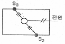
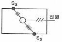
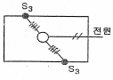
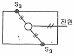
(정답률: 65%)
48. 일반적으로 과전류 차단기를 설치하여야 할 곳은?
- 접지공사의 접지선
- 다선식 전로의 중성선
- 송배전선의 보호용, 인접선 등 분기선을 보호하는 곳
- 저압 가공 전로의 접지측 전선
(정답률: 59%)
49. 전선의 공칭단면적에 대한 설명으로 옳지 않는 것은?
- 소선 수와 소선의 지름으로 나타낸다.
- 단위는 [mm2]로 표시한다.
- 전선의 실제단면적과 같다.
- 연선의 굵기를 나타내는 것이다.
(정답률: 62%)
50. 코드 상호간 또는 캡타이어 케이블 상호간을 접속하는 경우 가장 많이 사용되는 기구는?
- T형 접속기
- 코드 접속기
- 와이어 커넥터
- 박스용 커넥터
(정답률: 57%)
51. 저압 가공인입선이 횡단보도교 위에 시설되는 경우 노면상 몇 [m] 이상의 높이에 설치되어야 하는가?
- 3
- 4
- 5
- 6
(정답률: 38%)
52. 금속 전선관 공사에서 사용되는 후강 전선관의 규격이 아닌 것은?
- 16
- 28
- 36
- 50
(정답률: 70%)
53. 다음 중 금속 전선관 부속품이 아닌 것은?
- 록너트
- 노말 밴드
- 커플링
- 앵글 커넥터
(정답률: 35%)
54. 저압 옥내전로에서 전동기의 정격전류가 60A인 경우 전선의 허용전류[A]는 얼마 이상이 되어야 하는가?
- 66
- 75
- 78
- 90
(정답률: 57%)
55. 저압옥내 분기회로에 개폐기 및 과전류 차단기를 시설하는 경우 원칙적으로 분기점에서 몇[m] 이하에 시설하여야 하는가?
- 3
- 5
- 8
- 12
(정답률: 50%)
56. 주로 저압 가공전선로 또는 인입선에 사용되는 애자로서 주로 앵글베이스 스트랩과 스트랩볼트 인류바인드선(비닐절연 바인드선)과 함께 사용하는 애자는?
- 고압 핀 애자
- 저압 인류 애자
- 저압 핀 애자
- 라인포스트 애자
(정답률: 47%)
57. 다음 보기 중 금속관, 애자, 합성수지 및 케이블공사가 모두 가능한 특수 장소를 옳게 나열한 것은?
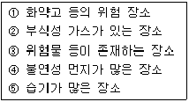
- ①, ②, ③
- ②, ③, ④
- ②, ④, ⑤
- ①, ④, ⑤
(정답률: 54%)
58. 가스 차단기에 사용되는 가스인 SF6의 성질이 아닌 것은?
- 같은 압력에서 공기의 2.5 ~ 3.5배의 절연 내력이 있다.
- 무색, 무취, 무해 가스이다.
- 가스 압력 3 ~4[kgf/cm2]에서 절연내력은 절연유 이상이다.
- 소호능력은 공기보다 2.5배 정도 낮다.
(정답률: 61%)
59. 금속관 공사를 노출로 시공할 때 직각으로 구부러지는 곳에는 어떤 배선기구를 사용하는가?
- 유니온 커플링
- 아웃렛 박스
- 픽스쳐 히키
- 유니버셜 엘보우
(정답률: 67%)
60. 물체의 두께, 깊이, 안지름 및 바깥지름 등을 모두 측정할 수 있는 공구의 명칭은?
- 버니어 켈리퍼스
- 마이크로미터
- 다이얼 게이지
- 와이어 게이지
(정답률: 64%)
tanθ = (XL - XC)/R
여기서 XL은 인덕티브 리액턴스, XC는 캐패시티브 리액턴스를 나타냅니다.
따라서,
tanθ = (15 - 12)/4 = 0.75
θ = arctan(0.75) = 37°
따라서, 정답은 "37°"입니다. 이는 인덕티브 리액턴스와 캐패시티브 리액턴스가 서로 상쇄되지 않고, 인덕티브 리액턴스가 캐패시티브 리액턴스보다 크기 때문에 전류가 전압보다 약간 뒤쳐진 상태에 있음을 나타냅니다.